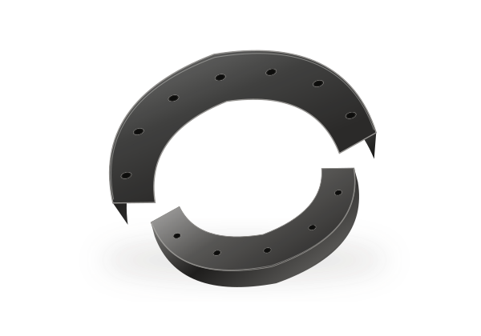
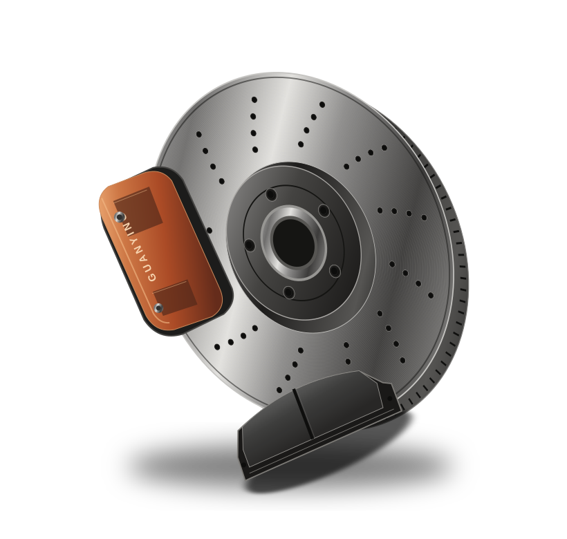
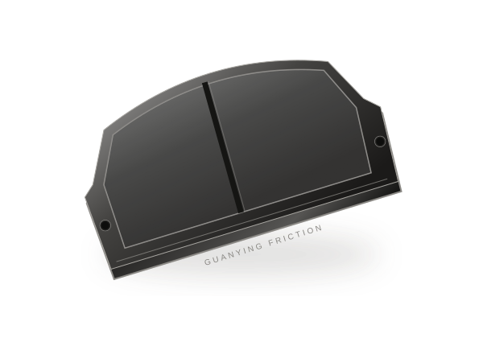
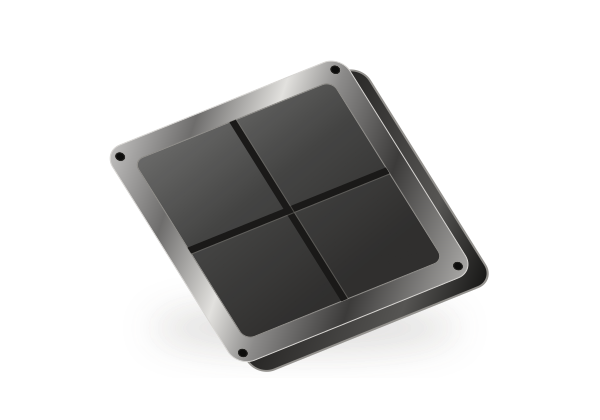

01

MATERIAL STUDY / 01鼓式GY-D 系列
鼓式刹车片
重卡、挂车、工程车主力规格，覆盖 410–440mm 常见制动鼓，低金属/半金属配方兼顾寿命与制动噪音。
查看技术规格
- 常见尺寸Φ410×180 · Φ420×180 · Φ440×200
- 摩擦系数0.36 – 0.42
- 工作温度-40 ℃ ~ 650 ℃
ENGINEERED FOR CERTAINTY
从车型到车桥，从尺寸到材质。
为商用车与工业制动，找到恰如其分的摩擦解决方案。

专注摩擦材料
以制造，回应信任。
01 / THE COLLECTION
从公路运输到工业应用，三大系列覆盖不同制动需求。
产品图与参数为示意，实际规格以确认结果为准。

MATERIAL STUDY / 01重卡、挂车、工程车主力规格，覆盖 410–440mm 常见制动鼓，低金属/半金属配方兼顾寿命与制动噪音。

MATERIAL STUDY / 02适配欧系与国产重卡前桥盘式制动，钢背+消音片结构，兼顾城市工况的低噪音与山区工况的抗衰退。

MATERIAL STUDY / 03面向偏航、主轴与高速轴制动，复合配方兼顾工况与寿命，可按项目需求确认适配。
02 / FIND YOUR FIT
选择你手头的信息，快速筛选 10 款示例产品。实际适配与报价需进一步确认。
还没找到？进入实时查询，查看候选型号和产品册出处。
也可以整理旧片照片与车桥信息，交给团队人工确认。
03 / THE GUANYING APPROACH
我们相信，可靠的合作始于清楚的沟通。
让信息更准确，让选择更从容。
知道车型、车桥或尺寸，就可以开始筛选。多种检索入口，让现场掌握的信息都能派上用场。
车型 / 车桥 / 尺寸
材质、尺寸与起订量集中展示，先确认需求，再与团队核实价格和交期，减少来回沟通。
产品参数 · 集中查看
在汽配店、仓库或客户现场，用手机查看候选型号，把需要的产品直接加入询价清单。
移动端 · 轻松选型
把选中的型号与采购需求整理到一起，生成可下载的询价草稿，让后续沟通有明确的起点。
选型清单 → 询价草稿
ONE STANDARD. DIFFERENT EXPRESSIONS.
同一产线、同一配方体系，按市场定位分层出货。
品牌名称为占位示意，可替换为实际品牌。
04 / FROM INQUIRY TO DELIVERY
从初步需求到样件与量产，每一步都有清晰的确认。以下为示意流程，具体周期以沟通为准。
车型、车桥型号、旧片照片或卡钳尺寸，任一即可。
映射库自动命中，人工复核车桥变更与替代方案。
根据需求确认价格、MOQ、交期与包装，检测资料以可提供内容为准。
样件确认后安排排产，支持 OEM 贴牌与多品牌混装。
05 / LET’S BUILD SOMETHING
先把车型与采购需求整理清楚。留下联系方式，生成一份可交给团队的询价草稿。
联系方式为占位，上线前替换为真实号码。
06 / ABOUT US
浙江冠英汽车零部件有限公司是一家专业致力于汽车摩擦材料系列产品的研发、生产、销售、服务于一体的企业，始创于 2006 年，坐落于风景秀丽的太湖之滨——浙江省湖州市，建筑总面积 43000 平方米。公司秉承「以质量求生存、以创新促发展、以服务占市场」的经营理念，致力于为汽车制造商提供品质的零部件产品和服务。
公司拥有一支经验丰富的技术团队，以及先进的生产设备和检测设施，确保产品质量始终处于行业水平。公司专业生产供应各种国产、进口汽车刹车片，新能源风力发电制动块，制动蹄总成，具有年供应刹车片和风电制动块 10000 余吨、制动蹄总成 60 万套 的能力，是国内摩擦材料行业中知名企业之一。
公司拥有完善的销售网络和售后服务体系，具有产品优良、品类齐全、市场竞争力强等优势。产品远销欧美、非洲、中东、东南亚等多个国家和地区，与多家外国企业有着良好的合作关系，深受广大客户青睐。